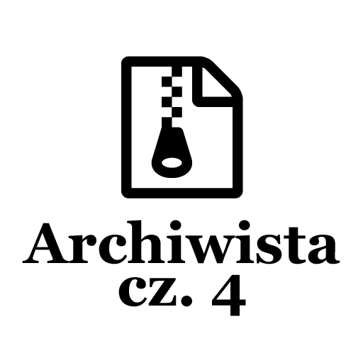
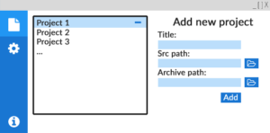
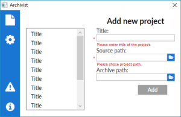

Post archive
Archiwista [cz. 4 - Główny wygląd aplikacji]

Kolejnym krokiem będzie stworzenie głównego szablonu aplikacji, który posłuży później do łatwego dodawania nowych funkcjonalności. Pierwszą rzeczą, którą zrobię będzie podzielenie okna na 2 części za pomocą Grid pozwoli mi to uzyskać 2 kolumny dzięki czemu wydziele przestrzeń na menu oraz część główną, w której będą wyświetlane strony aplikacji.
Menu
Posiadając miejsce wydzielone na menu, podzielę je jeszcze na dwie części. Tym razem nie będę tworzył kolumn, a wiersze, które pozwolą mi na rozdzielenie górnych oraz dolnych ikon. Posiadając taki podział pozostaje tylko użyć StackPanel aby wyświetlić przyciski.
<!-- ... -->
<!-- Main Menu -->
<Border Background="{StaticResource DarkPrimaryColorBrush}" Grid.Column="0">
<Grid >
<Grid.RowDefinitions>
<RowDefinition Height="Auto"/>
<RowDefinition Height="*"/>
</Grid.RowDefinitions>
<!-- Upper Buttons -->
<StackPanel Grid.Row="0"
VerticalAlignment="Top">
<!-- Projects Button -->
<Button Style="{StaticResource IconButton}"
Content="{StaticResource FontAwesomeFileIcon}"
FontSize="{StaticResource FontSizeXLarge}"
ToolTip="{StaticResource TooltipProjects}"
Command="{Binding ProjectsCommand}"
/>
<!-- Settings Button -->
<Button Style="{StaticResource IconButton}"
Content="{StaticResource FontAwesomeSettingsIcon}"
FontSize="{StaticResource FontSizeXLarge}"
ToolTip="{StaticResource TooltipSettings}"
Command="{Binding SettingsCommand}"
/>
</StackPanel>
<!-- Lower Buttons-->
<StackPanel Grid.Row="2"
VerticalAlignment="Bottom">
<!-- Report Button -->
<Button Style="{StaticResource IconButton}"
Content="{StaticResource FontAwesomeWarrningIcon}"
FontSize="{StaticResource FontSizeLarge}"
ToolTip="{StaticResource TooltipReport}"
Command="{Binding ReportCommand}"
/>
<!-- Info Button -->
<Button Style="{StaticResource IconButton}"
Content="{StaticResource FontAwesomeInfoIcon}"
FontSize="{StaticResource FontSizeLarge}"
ToolTip="{StaticResource TooltipInfo}"
Command="{Binding InfoCommand}"
/>
</StackPanel>
</Grid>
</Border>
<!-- ... -->Wracając do głównej tabeli podzielonej na dwie kolumny. W miejscu przeznaczonym dla zawartości aplikacji umieszczę obiekt ContentPresenter, który pozwala na wyświetlenie utworzonych wcześniej widoków. Poprzez przypisanie prezenterowi contentu np. User Control zostanie on wyświetlony w miejscu prezentera.
<!-- ... -->
<!-- Content presenter -->
<ContentPresenter Grid.Column="1"
MinHeight="300"
MinWidth="400"
Content="{Binding Page, Converter={local:ApplicationPageValueConverter}}"/>
<!-- ... -->MVVM
Posiadając już zaprojektowany prawie cały interfejs, muszę się zastanowić jak przedstawić poszczególne strony aplikacji za pomocą kodu. Użyję do tego wzorca projektowego Model-View-ViewModel, który doskonale sprawdza się w Windows Presentation Foundation, pozwalając na używanie bardzo mocnego mechanizmu bindowania informacji do naszego widoku w xaml. Aby aplikacja mogła zmieniać strony z informacjami, będę potrzebował ViewModel, który będzie posiadał wszelkie potrzebne informacje do wyświetlenia aplikacji w każdym stanie. W tym celu stworzę typ wyliczeniowy, o nazwie Pages - będzie on zawierał wszystkie strony aplikacji. Dzięki temu klasa opisująca widok strony będzie posiadała tylko jedną zmienną typu Pages mówiącą, jaka strona powinna być teraz wyświetlana.
Binding
Posiadając ViewModel i zmienną, która mówi jaka strona powinna wyświetlona możemy ją przypisać do ContentPresentera za pomocą mechanizmu bindingu jest to bardzo prosta i szybka operacja. Niestety prezenter nie rozpoznaje typu wyliczeniowego Pages i nie wie co ma wyświetlić. W tym celu wykorzystam ValueConverter, konwerter pozwala na zamianę jednego typu danych na inny. W tym celu stworzę ApplicationPageValueConverter, który zamieni zmienną typu Pages na odpowiadający mu obiekt UserControl. W ten oto sposób poprzez zmianę jednej zmiennej, mamy możliwość przechodzenia pomiędzy zakładkami aplikacji.
public class ApplicationPageValueConverter : BaseValueConverter<ApplicationPageValueConverter>
{
public override object Convert(object value, Type targetType, object parameter, CultureInfo culture)
{
if (value == null)
return null;
switch ((Pages)value)
{
case Pages.Projects:
return new ProjectsPage();
case Pages.Settings:
return new SettingsPage();
case Pages.Report:
return new ReportPage();
case Pages.Info:
return new InfoPage();
default:
return new ProjectsPage();
}
}
public override object ConvertBack(object value, Type targetType, object parameter, CultureInfo culture)
{
throw new NotImplementedException();
}
}Teraz pozostało stworzenie stron aplikacji, pierwszą zrobię stronę główną, czyli stronę prezentującą wszystkie projekty oraz możliwość dodania nowego projektu. Podczas tworzenia tej strony podzielę ją na dwie kolumny jak w przypadku całej aplikacji. Tym razem w lewej kolumnie znajdzie się lista projektów, a w prawej formularz umożliwiający dodanie nowego projektu. Dodatkowo formularz zostanie wyposażony w mechanizm walidacji, który pozwoli na sprawdzenie, czy użytkownik podał wymagane informacje już na poziomie interfejsu użytkownika, aby dodać nowy projekt. Efekt można zobaczyć na zdjęciu.
{kind=link}

{kind=link}

Jest to wstępny wygląd ekranu głównego. Z pewnością zmieni się jeszcze nie jeden raz. Kolejnymi rzeczami do zrobienia są pozostałe widoki aplikacji: Settings, Report, Info. Po stworzeniu widoków będę mógł przejść do implementacji logiki aplikacji.
Cały kod aplikacji można zobaczyć na moim koncie github [icon name="github" size="lg"] /kkolodziejczak/Archivist